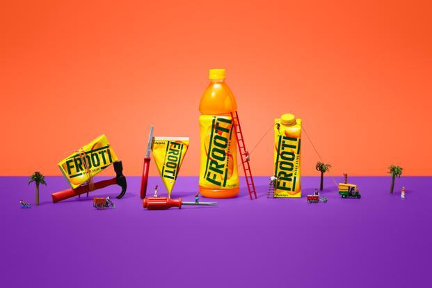

The love story between Frooti and India began in 1985. Today, Frooti rules the hearts of millions of mango lovers around the world. Just a swig of the rich and juicy Frooti is akin to the joyful experience of slurping on the real king of fruits. Made with real mango pulp from the freshest of mangoes, Frooti satisfies the craving for this popular seasonal fruit throughout the year. It juicy and flavourful mango taste not just rejuvenates the taste buds, but is the perfect thirst-quencher that refreshes you in no time.
Led by innovation, Frooti is the first drink to disrupt the beverage market in India with many “firsts”. Frooti was the first brand to be introduced in Tetra Pak in India, pioneering the concept of on-the-go. It was the first brand to unveil the PET bottle and TCA Tetra Pak as well. With these unique innovations in packaging, Parle Agro kept India popular mango drink fresh and accessible to consumers across India.
Frooti was launched in a green rectangular Tetra Pak as a ready-to-serve mango drink. Frooti was not the first mango drink, but quickly won a large market share, with 25.6% of market share as of June 2020

| Type | Manufacturer | Orgin | Introduced | Variants |
|---|---|---|---|---|
| Soft drink | Parle agro | India | 1964 | Mango |
The drink contains mango pulp, water, sugar, citric acid, ascorbic acid, salt, colouring and flavouring. Frooti contains 33.7 grams of sugar per 250 mL.
| Nutritional information Per 100ml | 100 ml per serve | %rda |
|---|---|---|
| Energy(kcal) | 62.9 | 3.1% |
| Carbohydrate(g) | 15.7 | 0 |
| Total sugar(g) | 15.6 | 28.4% | Total Fat(g) | 0 | 0 |
| Sodium(mg) | 25.4 | 1.3% |
*RDA-Recommended Dietary Allowances
A consumer study indicated that consumers wanted a recap bottle, which did not previously exist in the mango drink segment. In response, Parle Agro launched Frooti in a hygienic hot fill PET bottle. Frooti is now available in various sizes of PET bottles, including 200 mL, 250 mL, 500 mL, 600 mL, 1.2 L and 2 L.
